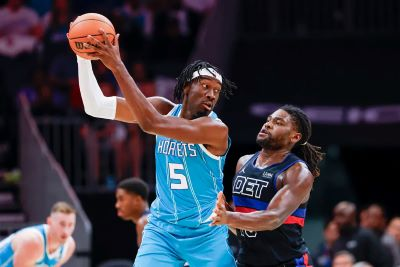

The Detroit Pistons opened up the season with a heartbreaking loss to the Miami Heat, 103-102. Cade Cunningham played his first game after missing the whole 2022-2023 season with season ending surgery. He led the team in scoring with 30 points shooting 13/27 from the field and 4/9 from three. Cade also had 9 assists to go with that. Cade played a great game with his biggest bucket coming near the end of the fourth to put the Pistons down 1. After this shot both teams didn't score for a full 1 minute and 46 seconds ultimately leading to the end score.
Second in line in scoring was Pistons center Jalen Duren, finishing with 17 points and 14 rebounds. The second year pro had a very good game catching lobs from cade as well as 4 blocks on the Miami Heat offense. Despite a good showing from the two, Cade missing a three pointer with 2.5 seconds to win the game costed them this one. Overall, the feel of this Pistons team is different from a season ago. With Cade back, Jalen Duren playing center, and the new rookie Ausar Thompson, Hopefully the Pistons can win some games!
The Detroit Pistons have a better result in the second game of the season with a 111-99 win over the Hornets. Pistons held the Hornets to under 100 points showing the defensive strength of this roster. This showed when they held Hornets star Lamelo Ball to just 20 points on 4/17 shooting. Some tensions rose in this game between Isaiah Stewart and Brandon Miller after a hard foul.Near the end of the first half both players had some words for each other, but it was swiftly cleared up before anything further happened. Stewart got the last laugh though in this game with an easy win.

Alec Burks led the team in scoring this game with 24 points. Jaden Ivey had a bounce back game putting up 18 points and 4 assists. Despite Cade not having the best game only putting up 12 points on 4/13 shooting the Pistons depth held their own. An encouraging sign that the role players were able to win this game because in years past this wasn't the case. Players like Ivey, Duren, Stewart, and Alec all contributing to this win in big ways. I'm looking forward to watching the rest of this season after these two games!